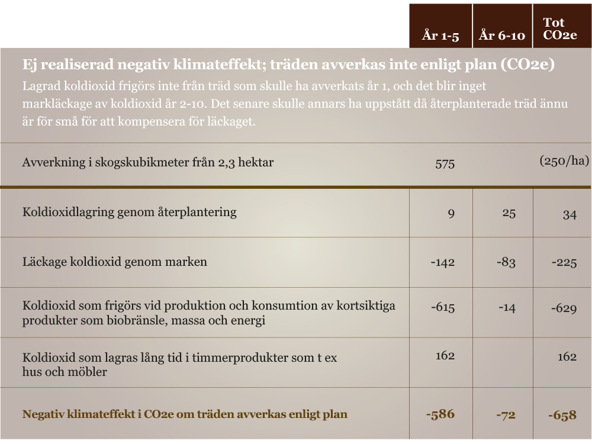

Klimateffekt EKEN STOP10 för en normalstor svensk avverkning
Beräkningen är ett exempel på klimateffekten av EKEN STOP10 på en normalstor svensk
avverkningsanmälan (2,3 ha). Siffrorna är baserade på historiska och genomsnittliga data från
Riksskogstaxeringen, SLU och Skogsstyrelsen, forskning från IPCC, samt artiklar publicerade i väletablerade
naturvetenskapliga publikationer som t ex Nature och PNAS. I våra samarbeten beräknas varje enskild skog
individuellt för att säkerställa verklig klimateffekt.
Klimateffekten av att avverkningsplanerade träd växer i ytterligare tio år
är tvåfaldig; dels en ej realiserad negativ effekt och dels en tillkommande
positiv effekt.
